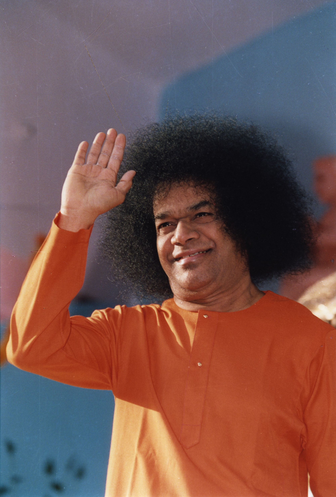
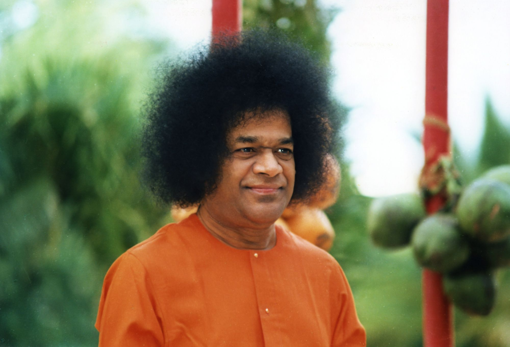

Groceries
Delivery of groceries

Initiatives
Love Calls, Love Responds. A help line run by volunteers from our region.
First establish the reign of love between the various members in your own home.
The help line
SaiCares Line are now Open. You can now call 1-857- DIAL-SAI for non-emergency services like delivery of groceries, prescription pickup, give rides, non-emergency medical/emotional support, etc. Our brothers and sisters are waiting to help you with your needs. All calls are confidential.
How volunteers help
Delivery of groceries
Prescription pickup
Give rides
Non-emergency medical and emotional support
Volunteer
Sairam, Are you missing service ? By Swami’s Grace, our region is rolling out an important volunteering opportunity called “SaiCares – Love Calls, Love Responds”.
The volunteers in this program will support, through a help line, other Sai brothers and sisters who may need some help. We are creating a volunteer registry as a repository for the talents that are available in our region. I request you to enroll in this volunteer pool so we can identify the appropriate resources when the need arises. This will be a great opportunity for all of us to bring out our hidden talents to serve our community. The volunteers in this program will support, through a help line, other Sai brothers and sisters who may need help such as the delivery of groceries, prescription pickup, give rides, non-emergency medical/emotional support, etc. When a need arises, you will have complete flexibility to accept or decline the request depending on your availability
Volunteer registry
please go to https://saicares.org
Click on “Click to Login”.
Enter the password “sairam” (all lower case). Click on “Login to Website”
Click on “Register as a Volunteer” on the top right. And click on the button “Click here to Register"
“California (Northern)” for the “Select your location” dropdown.
Love Calls, Love Responds.

Initiatives
Help for devotees who want to learn or improve leading bhajans.
Sing familiar Bhajans, so that all can share in the Anandha.
What it is
Sairam! We are grateful to Swami for inspiring and guiding us to restart this project. We are fortunate to have several devotees from around the region who have graciously offered to serve as coaches.
Regional One-On-One Bhajan Coaching is a service offered by devotees from our region to benefit devotees who wish to learn or improve to lead bhajans. These volunteer coaches will offer this service online on the phone, by Skype or Google hangouts. Coaches can help new/aspiring singers as well as people who want to improve
It is open to SSE children, Young Adults and Adults. Anybody aspiring to learn new bhajans or improve their bhajan singing.
Sing familiar Bhajans, so that all can share in the Anandha. Also, pay attention to the tune, the meaning, the variety, the voice, the raga, the thal (the tune and the beat) and other fine points of the Bhajans. If your voice is not pleasant or sweet, keep quiet; that is the best service you can do. Do not cause discontent, discord and disharmony, insisting on singing, because you are an office-bearer, or something! The Bhajans must be sweet to the ear, arousing pictures of the glory and grandeur of Godhead, in the mind of the singers and listeners; they must refer to various Names and Forms of God, so that the Bhajan Sessions might fill every one with ecstasy. Bhajan is a Sadhana for all who share in it; that is why it is prescribed, for every Unit.
Sathya Sai Speaks, Vol 11
How it works
The Bhajan Guidebook contains 108 simple bhajans, categorized into 3 levels (simple, medium and complex).
Please fill the form and we will connect you with the coach of your choice.
These volunteer coaches will offer this service online on the phone, by Skype or Google hangouts. Coaches can help new/aspiring singers as well as people who want to improve.
Helpful guidelines and resources
Our coaches and contacts
The One-On-One Coaching project leaders are dedicated devotees from our region.
Sairam! We are grateful to Swami for inspiring and guiding us to develop this project. Several center Devotion Coordinators expressed a need for such a service. We have been working on this project for over a year and are fortunate to have several devotees from around the region who have graciously offered to serve as coaches.
One-On-One Coaching is a service offered by devotees from our region to benefit devotees who wish to learn or improve to lead bhajans. These volunteer coaches will offer this service in-person or on the phone or by Skype. Coaches can help new/aspiring singers as well as people who want to improve.
If you need help choosing songs, please consult the “Bhajan Guidebook”, which contains a list of songs and lyrics. We have provided center Devotion Coordinators with the 108 Bhajan Guidebook and an mp3 CD that contains 108 simple bhajans, categorized into 3 levels (simple, medium and complex). If you have trouble locating the Guidebook or the mp3, please contact us.
Please check some basic information about the volunteers below listed in form below and submit. The objective of providing this information is to help you determine who may best fit your needs. After review, we will connect you with the coach of your choice.
If you have any questions, please do not hesitate to contact us. The One-On-One Coaching project leaders are dedicated devotees from our region.
We are grateful to Swami for this wonderful project and look forward to singing His glory together!
We are grateful to Swami for this wonderful project and look forward to singing His glory together!
More from the Devotion Wing
The One on One page sits on the older Devotion Wing site. Its other pages follow, grouped as in that site's menu.